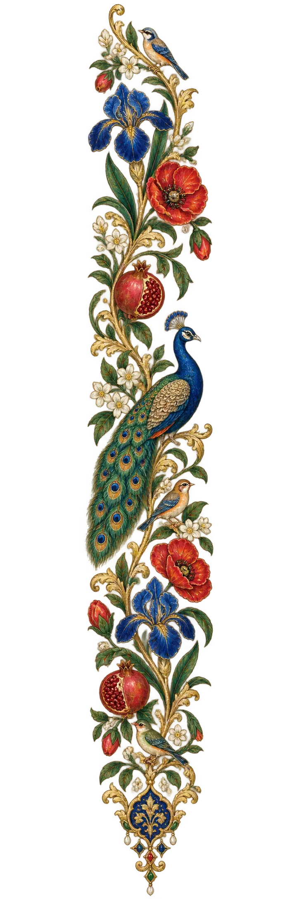

A
10–12
Saturday morning · Batch A
10:00 am–12:00 pm

کراچی May–October 2026 · beginner programme
A structured foundation for beginners in Karachi—built through patient guidance, careful listening and consistent Saturday practice.
01 Programme overview
Essentials of Sitar is a structured beginner programme created to promote sitar and classical music in Karachi. We build clean, controlled playing through a systematic curriculum—not speed, shortcuts or immediate performance.
See the practice systemFounded by Kiran Azeemi · in partnership with Syed Zafar Ali, sitarmaker
“Clarity and quality over speed.”
02 Schedule & fees
Classes meet every Saturday at Veritas Learning Circle School, Red Gate Campus, PECHS Block 6, Karachi. Choose the available two-hour block that fits your week.
Saturday morning · Batch A
10:00 am–12:00 pm
Saturday midday · Batch B
12:30 pm–2:30 pm
Saturday afternoon · Batch C
3:00 pm–5:00 pm
03 Practice system
Every student receives a course file and practice sheet. We listen to assigned sitar and classical recordings, work through Merukhand patterns and an introduction to Raag Yaman, and move forward only when five minutes of clean, relaxed playing is yours. Everyone progresses at their own pace.
Attend Saturdays consistently, arrive 10 minutes early and communicate ahead of time if you must miss a session.
If you use a shared workshop instrument, leave its strings, frets and tuning ready for the next student.
Use tanpura and tabla apps, follow assigned recordings and choose 30 focused minutes over two unfocused hours.
Respect every pace, keep phones silent during practice and share photos, videos or materials only with permission.
Monthly progress videos are optional and consent-based. The project may remove students for disrespect, neglect of instruments, unexplained repeated absences or sharing materials without permission.
04 Apply for Essentials of Sitar
Complete the application prompts below, then send your filled application to kiransohailazeemi1994@gmail.com. Seats are offered on a rolling basis, subject to batch and instrument availability.